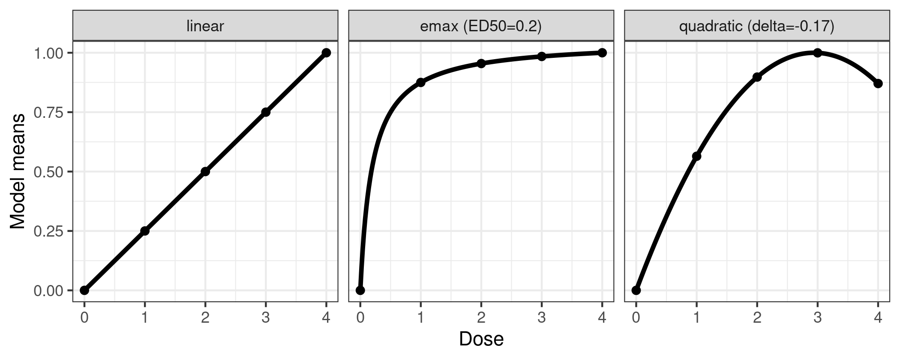

The DoseFinding package provides functions for the design and
analysis of dose-finding experiments (for example pharmaceutical Phase
II clinical trials). It provides functions for: multiple contrast tests
(MCTtest for analysis and powMCT,
sampSizeMCT for sample size calculation), fitting
non-linear dose-response models (fitMod for ML estimation
and bFitMod for Bayesian and bootstrap/bagging ML
estimation), calculating optimal designs (optDesign or
calcCrit for evaluation of given designs), both for normal
and general response variable. In addition the package can be used to
implement the MCP-Mod procedure, a combination of testing and
dose-response modelling (MCPMod) (Bretz et al. (2005), Pinheiro
et al. (2014)). A number of
vignettes cover practical aspects on how MCP-Mod can be implemented
using the DoseFinding package. For example a FAQ
document for MCP-Mod, analysis approaches for normal and binary data, sample size and power calculations as well
as handling data from more than one dosing regimen in certain scenarios.
Below a short overview of the main functions.
Perform multiple contrast test
library(DoseFinding)
data(IBScovars)
head(IBScovars) gender resp dose
1 1 1.5769231 1
2 1 0.6833333 3
3 1 0.2857143 0
4 1 0.6307692 3
5 1 0.1428571 2
6 1 0.1571429 1
## perform (model based) multiple contrast test
## define candidate dose-response shapes
models <- Mods(linear = NULL, emax = 0.2, quadratic = -0.17,
doses = c(0, 1, 2, 3, 4))
## plot models
plotMods(models)
## perform multiple contrast test
## functions powMCT and sampSizeMCT provide tools for sample size
## calculation for multiple contrast tests
test <- MCTtest(dose, resp, IBScovars, models=models,
addCovars = ~ gender)
testMultiple Contrast Test
Contrasts:
linear emax quadratic
0 -0.616 -0.889 -0.815
1 -0.338 0.135 -0.140
2 0.002 0.226 0.294
3 0.315 0.252 0.407
4 0.638 0.276 0.254
Contrast Correlation:
linear emax quadratic
linear 1.000 0.768 0.843
emax 0.768 1.000 0.948
quadratic 0.843 0.948 1.000
Multiple Contrast Test:
t-Stat adj-p
emax 3.208 0.00173
quadratic 3.083 0.00242
linear 2.640 0.00855Fit non-linear dose-response models here illustrated with Emax model
fitemax <- fitMod(dose, resp, data=IBScovars, model="emax",
bnds = c(0.01,5))
## display fitted dose-effect curve
plot(fitemax, CI=TRUE, plotData="meansCI")
Calculate optimal designs, here illustrated for target dose (TD) estimation
## optimal design for estimation of the smallest dose that gives an
## improvement of 0.2 over placebo, a model-averaged design criterion
## is used (over the models defined in Mods)
doses <- c(0, 10, 25, 50, 100, 150)
fmodels <- Mods(linear = NULL, emax = 25, exponential = 85,
logistic = c(50, 10.8811),
doses = doses, placEff=0, maxEff=0.4)
plot(fmodels, plotTD = TRUE, Delta = 0.2)
Calculated TD - optimal design:
0 10 25 50 100 150
0.34960 0.09252 0.00366 0.26760 0.13342 0.15319
plot(desTD, fmodels)